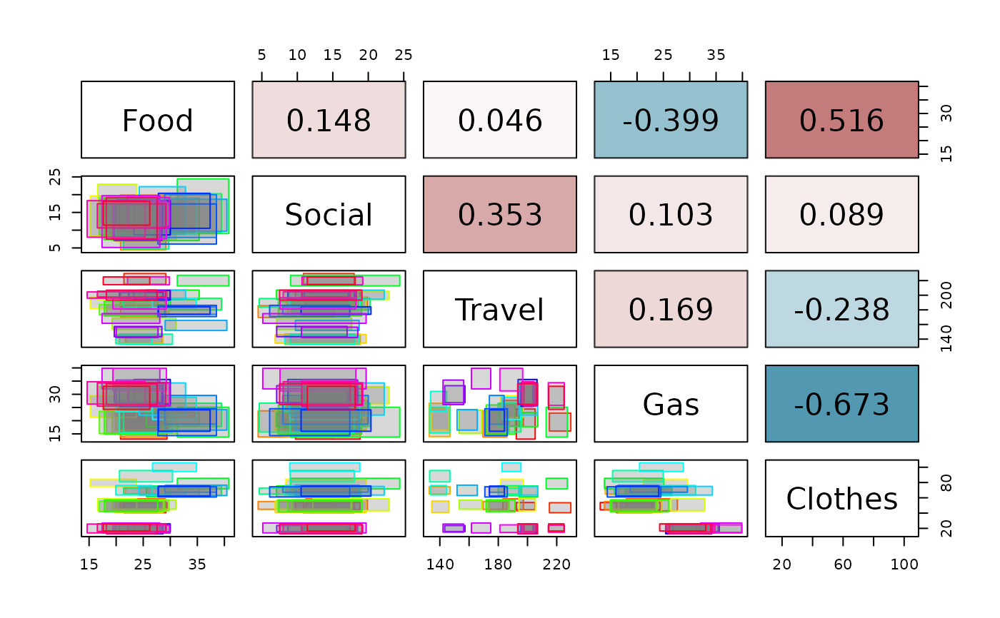
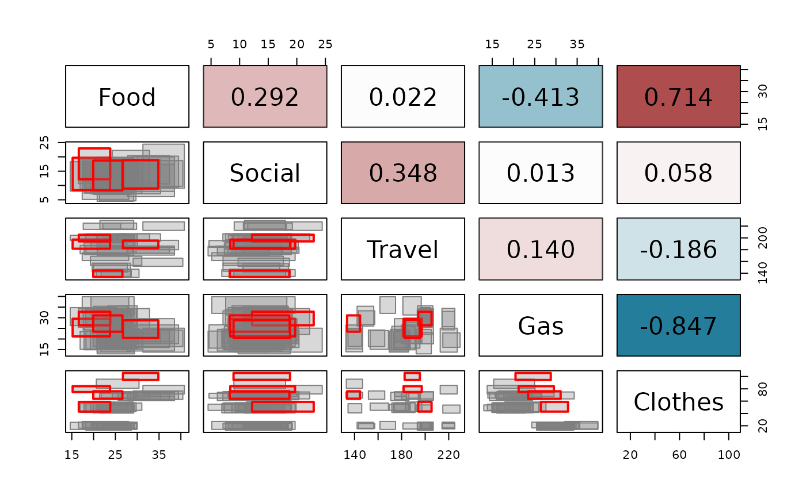

Adapted from pairs.panels (R package "psych") shows a scatter plot of matrices, with bivariate symbolic scatter plots below the diagonal, variables' names on the diagonal, and all the symbolic correlations above the diagonal. Useful for descriptive statistics of symbolic objects described by interval variables.
Arguments
- data
An intData object containing the macrodata/interval data
- type
The type of plot to generate: "rectangles" or "crosses" or "crosses2". Default is "rectangles".
- cex.cor
Character expansion factor
- corr
A matrix with the symbolic correlations; if not provided the upper panel is omitted
- palette
A vector with colors for each observation.
- fill_col
If
type="rectangles", a vector with colors for the fill of each observation, or a single color for all observations. Default is "gray50".- is_outlier
A vector with logical values indicating if the observation is an outlier or not. It makes the line width of the outlying observations thicker. Default is NULL.
- ...
Additional graphical parameters.
Value
A scatter plot matrix is drawn in the graphic window. The lower off diagonal draws scatter plots, the diagonal variables' names, the upper off diagonal reports all the symbolic correlations.
Examples
data(creditcard)
credit_card_int <- creditcard$intData
credit_card_cov<-int_cov(credit_card_int)
credit_card_cor<-cov2cor(credit_card_cov)
SYMB.pairs.panels(credit_card_int,corr=credit_card_cor,labels=colnames(credit_card_int))

# Highlight outliers in the biplot
credit_card_IMCD <- IMCD(credit_card_int, floor(0.75*credit_card_int@NObs), "farness", 0.9)
credit_card_outliers <- int_outliers(credit_card_IMCD$robust_dist, "farness", 0.9)
outliers_colors<-rep('gray50',credit_card_int@NObs)
names(outliers_colors)<-rownames(credit_card_int)
outliers_colors[credit_card_outliers$outliers_names] = 'red'
SYMB.pairs.panels(credit_card_int,corr=cov2cor(credit_card_IMCD$cov_IMCD),
palette = outliers_colors,labels=colnames(credit_card_int),
type = "rectangles",is_outlier = credit_card_outliers$is_outlier)
